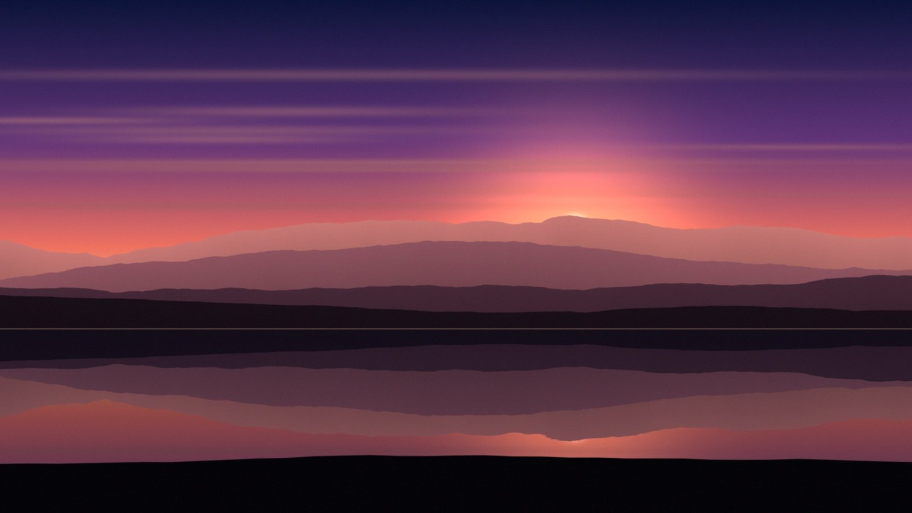
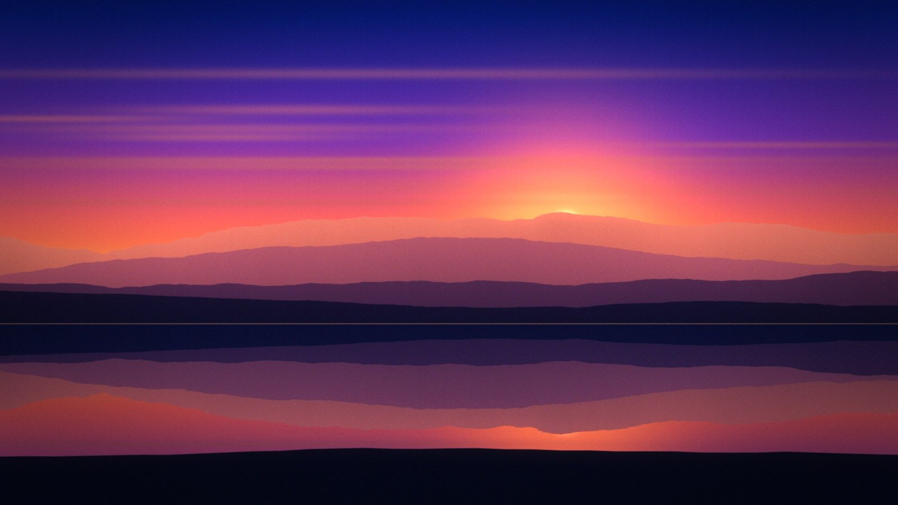

Genug gelesen. Ab ans Bild.
Das interaktive Tutorial in der App zeigt dir jeden Schritt direkt am richtigen Regler.
Kein Fachchinesisch, keine 40 Regler auf einmal. Du lernst die eine Reihenfolge, die Profis immer benutzen – und bekommst Werte, die sofort funktionieren.


VORHERNACHHERZwei Dinge, die gern verwechselt werden:
Korrektur = das Bild „richtig“ machen. Helligkeit stimmt, Weiß ist weiß, nichts ist ausgebrannt. Das ist das Fundament.
Grading = dem Bild eine Stimmung geben. Warm und nostalgisch, kühl und kinomäßig, düster und filmisch. Das ist der Teil, der Spaß macht.
In UBGrade baust du beides als Chain: Tools liegen unten in einer Reihe und wirken von links nach rechts. Jedes Tool kannst du an-/ausschalten, verschieben, löschen – und mit Strg+Z ist alles rückgängig. Du kannst nichts kaputt machen.
Klick rechts in der Kategorie Licht auf Basis-Ton. Geh die Regler genau in dieser Reihenfolge durch:
| Regler | Startwert | Was er macht |
|---|---|---|
| Belichtung | ± nach Gefühl | Gesamthelligkeit. So lange, bis dein Motiv gut zu sehen ist. |
| Lichter | −20 … −40 | Holt hellen Himmel und ausgebrannte Stellen zurück. |
| Tiefen | +10 … +25 | Öffnet dunkle Bereiche, ohne das Bild flau zu machen. |
| Kontrast | +10 … +20 | Gibt Punch, nachdem Lichter & Tiefen gezähmt sind. |
| Schwarz | −5 … −15 | Sattes Schwarz. Nicht übertreiben, sonst „säuft“ Detail ab. |
| Dynamik | +10 … +20 | Schonende Sättigung – blasse Farben mehr, Haut kaum. |
Temperatur nach links = kühler/blauer, nach rechts = wärmer/oranger. Tönung korrigiert Grün- oder Magentastiche (typisch bei Neonlicht und Handy-Fotos).
Woran du es erkennst: Schau auf etwas, das in echt weiß oder grau ist – ein T-Shirt, eine Wand, Wolken. Sieht es neutral aus? Passt. Und: Haut muss natürlich wirken, nicht gelb und nicht rosa.
Jetzt wird's kreativ. Split-Toning färbt dunkle und helle Bereiche getrennt ein. Der Kino-Klassiker ist Teal & Orange: kühle Schatten, warme Lichter – Haut leuchtet, Hintergrund tritt zurück.
| Regler | Wert | |
|---|---|---|
| Tiefen Farbton | ≈ 195–210 | Blau-Grün |
| Tiefen Sättigung | 15 … 25 | Klein anfangen! |
| Lichter Farbton | ≈ 30–45 | Orange/Gold |
| Lichter Sättigung | 15 … 25 | |
| Balance | −20 … +20 | Verschiebt, wo „Schatten“ aufhört und „Licht“ anfängt. |
Film-Charakter gibt deinem Bild die Gradation eines echten Films. Für den Start: UB Daylight 250 bei Tageslicht, UB Tungsten 500 für Abends/Innen, Portrait 400 Soft für Menschen. Tool-Stärke (der kleine Regler am Tool) auf 60–80 %.
Korn 10–20 macht aus „digital glatt“ „gefilmt“. Vignette −15 bis −30 dunkelt die Ränder ab und lenkt den Blick in die Mitte. Optional für Highlights mit Glow: Halation (roter Schimmer um Lichter) oder Diffusion (weicher Mist-Filter).
Drück \ für Vorher/Nachher oder S für die Split-Ansicht. Nach 10 Minuten Grading gewöhnen sich deine Augen an jeden Look – der Vergleich holt dich zurück.
Wirkt's zu viel? Zieh unten die Stärke auf 60–80 %. Der unterschätzteste Profi-Trick überhaupt: Ein guter Look verbessert das Bild – er übertönt es nicht.
Zufrieden? Speichern (Diskette unten oder Strg+S) – dein Look landet als UBGrade links in der Bibliothek und funktioniert in allen Programmen.
Lade sie als Datei und zieh sie in UBGrade (oder Import-Button links oben) – oder bau sie mit den Werten selbst nach. Nachbauen lernt mehr, versprochen.
Der „nur besser“-Look. Perfekt für Produkte, Portraits, Alltag.
Der Blockbuster-Klassiker. Haut leuchtet, Rest wird kühl.
Matt, gedämpft, nachdenklich. Für Streets, Regen, Abendstimmung.
Warm, weich, glühend. Sonnenuntergang, Hochzeit, Sommer.
Unter dem Bild siehst du die Scopes. Sie zeigen dir objektiv, was deine Augen vielleicht übersehen:
Tipp: Drück F für False Color – zeigt Belichtungszonen in Farbe. Rot = ausgebrannt, Blau/Lila = sehr dunkel.
Mit der Vollversion arbeitest du direkt in deinem Schnittprogramm – genau wie bei Magic Bullet Looks:
In der Web-Testversion kannst du Videos auch ausprobieren – die ersten 30 Sekunden, Frame-Export mit Wasserzeichen.
Auf dem Mac statt Strg einfach ⌘.
Das interaktive Tutorial in der App zeigt dir jeden Schritt direkt am richtigen Regler.